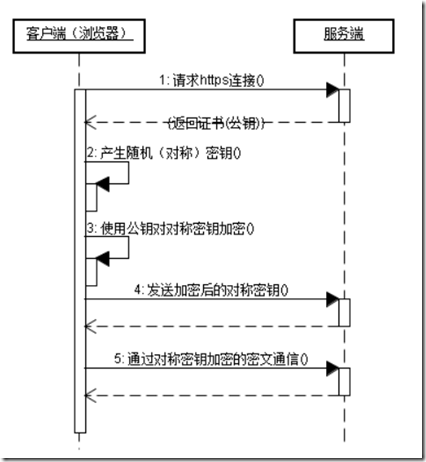

OSI七层模型 & 常见五层模型
OSI（Open System Interconnection, 开放系统互连）七层网络模型称为开放式系统互联参考模型 , 是一个逻辑上的定义, 一个规范, 它把网络从逻辑上分为了7层. 每一层都有相关、相对应的物理设备, 比如路由器(网络层), 交换机(数据链路层). OSI 七层模型是一种框架性的设计方法 , 建立七层模型的主要目的是为解决异种网络互连时所遇到的兼容性问题, 其最主要的功能就是帮助不同类型的主机实现数据传输. 它的最大优点是将服务、接口和协议这三个概念明确地区分开来, 通过七个层次化的结构模型使不同的系统不同的网络之间实现可靠的通讯.
| 应用层 |
|---|
| 表示层 |
| 会话层 |
| 传输层：TCP/UDP |
| 网络层: IP/ICMP |
| 数据链路层: ARP/HDLC/PPP/SLIP |
| 物理层 |
图1 OSI七层模型
目前较为常用的5层模型, 模型分层如图2.
| 应用层 |
|---|
| 传输层 |
| 网络层 |
| 数据链路层 |
| 物理层 |
分层的好处
建立七层模型的主要目的是为解决异种网络互连时所遇到的兼容性问题. 它的最大优点是将服务、接口和协议这三个概念明确地区分开来：服务说明某一层为上一层提供一些什么功能, 接口说明上一层如何使用下层的服务, 而协议涉及如何实现本层的服务；这样各层之间具有很强的独立性, 互连网络中各实体采用什么样的协议是没有限制的, 只要向上提供相同的服务并且不改变相邻层的接口就可以了. 网络七层的划分也是为了使网络的不同功能模块（不同层次）分担起不同的职责, 从而带来如下好处：
- 减轻问题的复杂程度, 一旦网络发生故障, 可迅速定位故障所处层次, 便于查找和纠错；
- 在各层分别定义标准接口, 使具备相同对等层的不同网络设备能实现互操作, 各层之间则相对独立, 一种高层协议可放在多种低层协议上运行；
- 能有效刺激网络技术革新, 因为每次更新都可以在小范围内进行, 不需对整个网络动大手术
各层功能说明
物理层
OSI 模型的最低层或第一层, 该层包括物理连网媒介, 如电缆连线连接器. 物理层的协议产生并检测电压以便发送和接收携带数据的信号. 在你的桌面PC 上插入网络接口卡, 你就建立了计算机连网的基础. 换言之, 你提供了一个物理层. 尽管物理层不提供纠错服务, 但它能够设定数据传输速率并监测数据出错率. 网络物理问题, 如电线断开, 将影响物理层.
用户要传递信息就要利用一些物理媒体, 如双绞线、同轴电缆等, 但具体的物理媒体并不在OSI的7层之内, 有人把物理媒体当做第0层, 物理层的任务就是为它的上一层提供一个物理连接, 以及它们的机械、电气、功能和过程特性. 如规定使用电缆和接头的类型、传送信号的电压等. 在这一层, 数据还没有被组织, 仅作为原始的位流或电气电压处理, 单位是bit比特.
数据链路层
OSI模型的第二层, 它控制网络层与物理层之间的通信. 它的主要功能是如何在不可靠的物理线路上进行数据的可靠传递. 为了保证传输, 从网络层接收到的数据被分割成特定的可被物理层传输的帧. 帧是用来移动数据的结构包, 它不仅包括原始数据, 还包括发送方和接收方的物理地址以及检错和控制信息. 其中的地址确定了帧将发送到何处, 而纠错和控制信息则确保帧无差错到达. 如果在传送数据时, 接收点检测到所传数据中有差错, 就要通知发送方重发这一帧.
数据链路层的功能独立于网络和它的节点和所采用的物理层类型, 它也不关心是否正在运行 Word 、Excel 或使用Internet. 有一些连接设备, 如交换机, 由于它们要对帧解码并使用帧信息将数据发送到正确的接收方, 所以它们是工作在数据链路层的.
在物理层提供比特流服务的基础上, 建立相邻结点之间的数据链路, 通过差错控制提供数据帧（Frame）在信道上无差错的传输, 并进行各电路上的动作系列.
数据链路层在不可靠的物理介质上提供可靠的传输. 该层的作用包括：物理地址寻址、数据的成帧、流量控制、数据的检错、重发等.
数据链路层协议的代表包括：SDLC、HDLC、PPP、STP、帧中继等.
网络层
OSI 模型的第三层, 其主要功能是决定如何将数据从发送方路由到接收方.
网络层通过综合考虑发送优先权、网络拥塞程度、服务质量以及可选路由的花费来决定从一个网络中节点A 到另一个网络中节点B 的最佳路径. 由于网络层处理, 并智能指导数据传送, 路由器连接网络各段, 所以路由器属于网络层. 在网络中, “路由”是基于编址方案、使用模式以及可达性来指引数据的发送.
网络层负责在源机器和目标机器之间建立它们所使用的路由. 这一层本身没有任何错误检测和修正机制, 因此, 网络层必须依赖于端端之间的由DLL提供的可靠传输服务.
网络层用于本地LAN网段之上的计算机系统建立通信, 它之所以可以这样做, 是因为它有自己的路由地址结构, 这种结构与第二层机器地址是分开的、独立的. 这种协议称为路由或可路由协议. 路由协议包括IP、Novell公司的IPX以及Apple Talk协议.
网络层是可选的, 它只用于当两个计算机系统处于不同的由路由器分割开的网段这种情况, 或者当通信应用要求某种网络层或传输层提供的服务、特性或者能力时. 例如, 当两台主机处于同一个LAN网段的直接相连这种情况, 它们之间的通信只使用LAN的通信机制就可以了(即OSI 参考模型的一二层).
传输层
传输协议同时进行流量控制或是基于接收方可接收数据的快慢程度规定适当的发送速率. 除此之外, 传输层按照网络能处理的最大尺寸将较长的数据包进行强制分割. 例如, 以太网无法接收大于1500字节的数据包. 发送方节点的传输层将数据分割成较小的数据片, 同时对每一数据片安排一序列号, 以便数据到达接收方节点的传输层时, 能以正确的顺序重组. 该过程即被称为排序.
工作在传输层的一种服务是 TCP/IP 协议套中的TCP （Transport Control Protocol, 传输控制协议）, UPD (User Packet Data, 用户数据报协议), 另一项传输层服务是IPX/SPX协议集的SPX（序列包交换）.
三次握手与四次挥手
三次握手过程：
- 第一次握手：host1发送一个TCP标志位SYN=1、ACK=0的数据包给host2, 并随机会产生一个Sequence number=3233.当host2接收到这个数据后, host2由SYN=1可知客户端是想要建立连接；
- 第二次握手：host2要对客户端的联机请求进行确认, 向host1发送应答号ACK=1、SYN=1、 确认号Acknowledge number=3234, 此值是host1的序列号加1, 还会产生一个随机的序列号Sequence number=36457, 这样就告诉host1可以进行连接；
- 第三次握手：host1收到数据后检查Acknowledge number是否是3233+1的值, 以及ACK的值是否为1, 若为1, host1会发送ACK=1、确认号码Acknowledge number=36457, 告诉host2,你的请求连接被确认, 连接可以建立.
四次挥手过程：
- 第一次挥手：当传输的数据到达尾部时, host1向host2发送FIN=1标志位；可理解成, host1向host2说, 我这边的数据传送完成了, 我准备断开了连接；
- 第二次挥手：因TCP的连接是全双工的双向连接, 关闭也是要从两边关闭；当host2收到host1发来的FIN=1的标志位后, host2不会立刻向host1发送FIND=1的请求关闭信息, 而是先向host1发送一个ACK=1的应答信息, 表示：你请求关闭的请求我已经收到, 但我可能还有数据没有完成传送, 你再等下, 等我数据传输完成了我就告诉你；
- 第三次挥手：host2数据传输完成, 向host1发送FIN=1, host1收到请求关闭连接的请求后, host1就明白host2的数据已传输完成, 现在可以断开连接了,
- 第四次挥手：host1收到FIND=1后, host1还是怕由于网络不稳定的原因, 怕host2不知道他要断开连接, 于是向host2发送ACK=1确认信息进行确认, 把自己设置成TIME_WAIT状态并启动定时器, 如果host2没有收到ACK, host2端TCP的定时器到达后, 会要求host1重新发送ACK, 当host2收到ACK后, host2就断开连接；当host1等待2MLS（2倍报文最大生存时间）后, 没有收到host2的重传请求后, 他就知道host2已收到了ACK, 所以host1此时才关闭自己的连接.
HTTPS
HTTPS的工作原理
HTTPS在传输数据之前需要客户端(浏览器)与服务端(网站)之间进行一次握手, 在握手过程中将确立双方加密传输数据的密码信息. TLS/SSL协议不仅仅是一套加密传输的协议, 更是一件经过艺术家精心设计的艺术品, TLS/SSL中使用了非对称加密, 对称加密以及HASH算法. 握手过程的具体描述如下：
- 浏览器将自己支持的一套加密规则发送给网站.
- 网站从中选出一组加密算法与HASH算法, 并将自己的身份信息以证书的形式发回给浏览器. 证书里面包含了网站地址, 加密公钥, 以及证书的颁发机构等信息.
- 浏览器获得网站证书之后浏览器要做以下工作：
- 验证证书的合法性(颁发证书的机构是否合法, 证书中包含的网站地址是否与正在访问的地址一致等), 如果证书受信任, 则浏览器栏里面会显示一个小锁头, 否则会给出证书不受信的提示.
- 如果证书受信任, 或者是用户接受了不受信的证书, 浏览器会生成一串随机数的密码, 并用证书中提供的公钥加密.
- 使用约定好的HASH算法计算握手消息, 并使用生成的随机数对消息进行加密, 最后将之前生成的所有信息发送给网站.
- 网站接收浏览器发来的数据之后要做以下的操作：
- 使用自己的私钥将信息解密取出密码, 使用密码解密浏览器发来的握手消息, 并验证HASH是否与浏览器发来的一致.
- 使用密码加密一段握手消息, 发送给浏览器.
浏览器解密并计算握手消息的HASH, 如果与服务端发来的HASH一致, 此时握手过程结束, 之后所有的通信数据将由之前浏览器生成的随机密码并利用对称加密算法进行加密. 这里浏览器与网站互相发送加密的握手消息并验证, 目的是为了保证双方都获得了一致的密码, 并且可以正常的加密解密数据, 为后续真正数据的传输做一次测试. 另外, HTTPS一般使用的加密与HASH算法如下：
- 非对称加密算法：RSA, DSA/DSS
- 对称加密算法：AES, RC4, 3DES
- HASH算法：MD5, SHA1, SHA256 HTTPS对应的通信时序图如下：

【参考文献】: